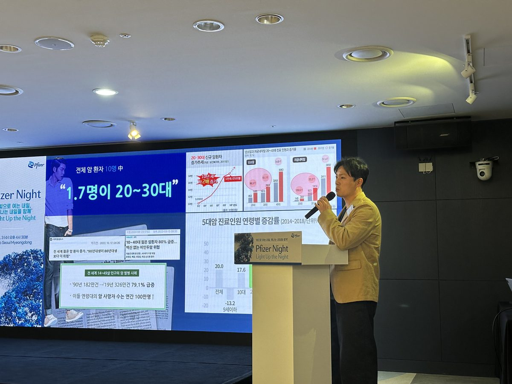
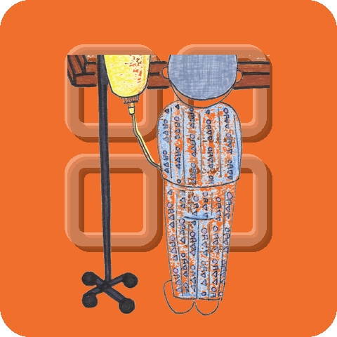
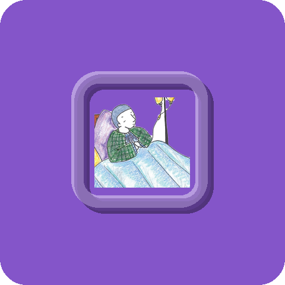
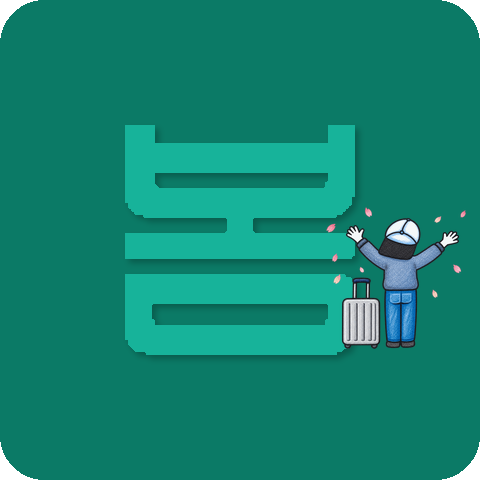

TTOBOM means “spring again”
Korea’s first non-profit for young adults with cancer. In Korean, bom is both “spring” and “to see.” TTOBOM is spring returning — and seeing you again.
Cancer does not skip the young
In 2023, 20,253 people in their 20s and 30s were newly diagnosed with cancer in Korea — 55 every day.
Yet almost nothing existed for those who met cancer at the age they were meant to be starting out.

- “It must run in the family”
For people in their 20s and 30s, cancer far more often traces to environment — stress, diet, how they live — than to genes.
- “They must have been frail”
It arrives at the healthiest age too. It is nobody’s fault.
- So they hide it
Only at the hospital bed do visitors say quietly: “Actually, I had it too.”
-
It is common
55
young adults diagnosed every day 20,253 in 2023 · up 20.5% in five years (20s)
-
Most survive
70.6%
five-year survival rate Cancer is a disease people come through
-
But they cannot return
30.5%
return to work within 5 years Europe is 62% — we are at half of that
Korea Central Cancer Registry 2023 · Psycho-Oncology · Clinical Cancer Journal
What keeps them out is not the illness
- “They cannot contribute to society”72
- “Cancer cannot be cured”58
- “They cannot regain their health”57
National Cancer Center · Korean Cancer Association (%)
Treatment ends, but life does not simply resume.
That is the time TTOBOM exists to protect.
All of us carried
assumptions about cancer
Young adults with cancer have no family history.
Not something in the family. Not a weak constitution. The cause is stress, diet — how we live. Which means this could be anyone’s story.
Analysis by a major university hospital in Korea
A change of perspective
In Korea, many employers give credit for completing military service. So why not for surviving something harder? Coming through cancer is not a liability — it is resilience already proven.
Saying it out loud
We want a society where people can name their cancer without flinching. Attitude alone will not get us there, so TTOBOM pushes for policy change — and in the meantime, builds places where people can simply enjoy themselves.
Started by someone
who had been there
“Why is there nothing for us?” TTOBOM began with that one question.
Stage 4 lymphoma, clear in five months
Lee Jung-hoon was diagnosed with stage 4 Burkitt lymphoma. A young body spreads disease fast — but it answers treatment just as fast. Five months after a terminal diagnosis, he was back in ordinary life.
The body was the easier part
“Why me?” Self-denial was the real wall. What pulled him over it was a plan: “when this is done, I’m going there.” The will to recover needs something to hold on to.
Passing it on
Visitors kept saying, quietly, “Actually, I had it too.” That is how much people were hiding. He gathered others who felt the same, and that community became a registered non-profit in 2020.
“Young adults with cancer are an iceberg.
What shows above the water is a fraction —
far more are hidden beneath it.”

TTO, BOM
One name, holding two meanings.
The first
To see again
“I SEE YOU.”
The greeting people exchange in Avatar.
In Korean, bom means exactly that — to see.
TTOBOM adds one thing.
I want to see you well again.
The second
The season that returns
“SPRING, AGAIN.”
However long the winter holds,
the season comes back around.
That is the promise in this name.
It will come back to you too.
The four squares of our logo are one person’s years.
-
Summer여름
Before cancer —
the healthiest days -

Autumn가을
The diagnosis,
and being alone -

Winter겨울
The hardest stretch
of treatment -

Spring봄
The season that comes
after the winter
From the healthiest days, through diagnosis and treatment, to spring again.
Wanting to see that person again is what the logo carries.
I SEE U AGAIN — we see you again.
Four directions
So that ordinary life can bloom again.
Changing perceptions
From “why so young?” to assumed heredity to assumed fragility — we push back on all of it.
Emotional support
We connect peers walking the same road, so no one walks it alone.
Better care
We demand treatment environments that fit young patients.
Returning to life
Through treatment and out the other side, we walk with them back to daily life.
How far we have come
From one young man’s illness to here.
- Fourth “Cheer UP, Spring” talk concert (12 December)
- Expanded advocacy, including a seminar with a global pharmaceutical company
- Lecture at Samsung Medical Center
- “Cheer UP, Spring” talk concert becomes a regular event
- Website renewal, first general assembly
- Incorporated as a non-profit association; designated for tax-deductible donations
- Launched the YouTube channel “TTOTTOBOM TV”
- Skill-sharing meetups: beauty, calligraphy, travel, cooking, photography, paper art
- Domestic travel project (Namhae)
- Crowdfunded a travel photobook; featured on tvN’s “Little Big Hero”
- Photobooks donated to university hospitals; travel projects to Gangneung and Thailand
- First overseas bucket-list trip; featured in the JoongAng Ilbo
- First website; first anniversary event
- Community activities begin
- Founder Lee Jung-hoon is diagnosed with stage 4 Burkitt lymphoma — the seed of TTOBOM
Legal information
A non-profit association authorised by the Seoul Metropolitan Government under Article 32 of the Korean Civil Act.
- Legal name
- 사단법인 한국청년암협회또봄
(Korea Youth Cancer Association) - Authorised
- 17 July 2020 · Seoul Metropolitan Gov. No. 2020-138
- Reg. number
- 772-82-00377
- Chairperson
- Lee Jung-hoon
- Address
- 4F #17, 8 Teheran-ro 2-gil, Gangnam-gu, Seoul, Republic of Korea
Purpose (Articles of Association, Art. 4)
We carry out the following activities.
- Recovery, emotional support and advocacy for young adults with cancer
- Improving treatment environments and public perception, and proposing policy
- Publishing, education and outreach on prevention, treatment and recovery
- Other activities necessary to fulfil this purpose
Financial statements and fundraising disclosures are published in Korean — see Annual Report and the authority links in the footer.
When you join in, someone’s spring arrives sooner.
We want to see that person again
What TTOBOM does runs on support.
Join the spring of young adults.